Projeto Ponteira Inteligente
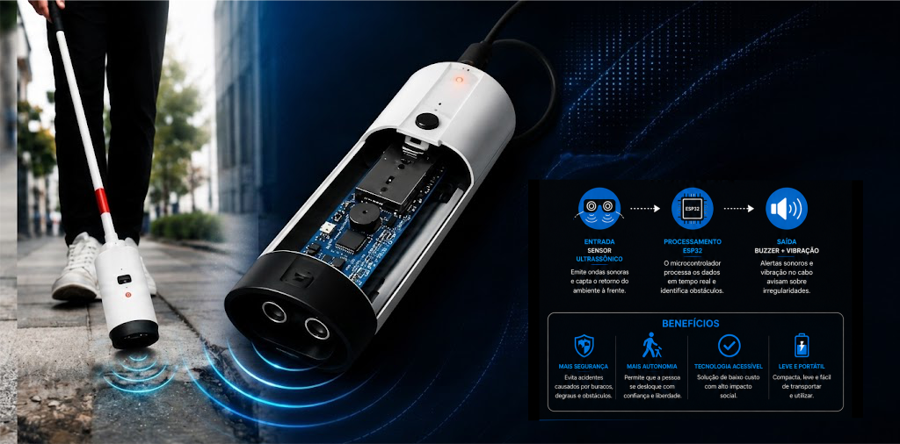
Este projeto foi desenvolvido com o objetivo de auxiliar pessoas com
deficiência visual, oferecendo mais segurança e autonomia durante
a locomoção. O sistema é capaz de detectar buracos, obstáculos e
irregularidades no solo, reduzindo riscos de acidentes e melhorando
a orientação do usuário em diferentes ambientes.
A solução utiliza o microcontrolador Espressif Systems ESP32 integrado
ao sensor ultrassônico HC-SR04, motores vibratórios e buzzer,
responsáveis pela emissão de alertas sonoros e táteis em tempo real.
Dessa forma, o dispositivo combina tecnologia, acessibilidade e inovação
para contribuir com a inclusão social e a mobilidade inteligente.
Introdução
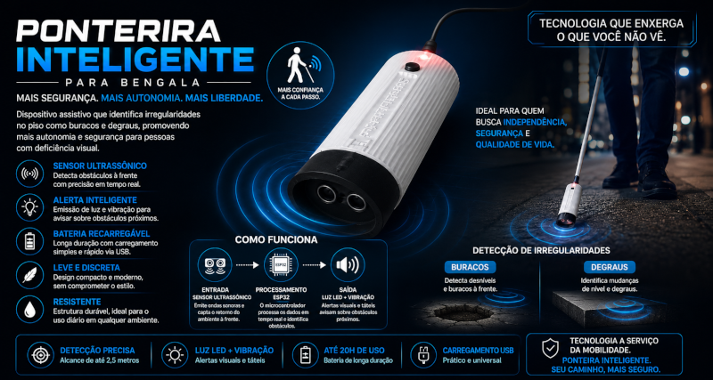
A mobilidade de pessoas com deficiência visual ainda enfrenta desafios relacionados
à segurança e acessibilidade. Buracos, obstáculos e irregularidades nas calçadas
podem causar acidentes e dificultar a locomoção. Pensando nisso, este projeto propõe
uma ponteira inteligente para bengala utilizando Espressif Systems ESP32, sensor ultrassônico,
motores vibratórios e buzzer. O sistema detecta obstáculos e irregularidades
no solo em tempo real, emitindo alertas sonoros e vibratórios
para aumentar a segurança, autonomia e inclusão social do usuário.
A proposta do projeto Foi desenvolver uma ponteira inteligente capaz
de detectar essas irregularidades e informar o usuário em tempo real.
Justificativa
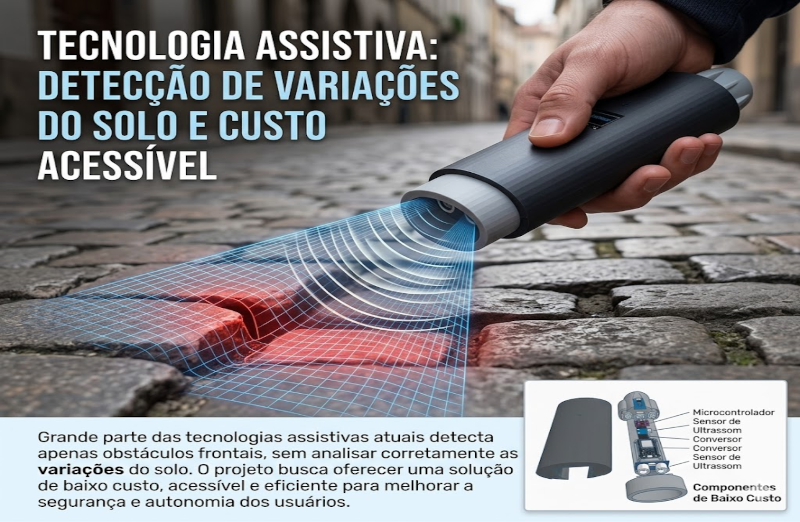
Muitas tecnologias assistivas disponíveis atualmente possuem alto custo
e funcionalidades limitadas, realizando apenas a detecção simples de obstáculos.
Diante disso, a ponteira inteligente foi desenvolvida como uma solução acessível
e de baixo custo, capaz de identificar obstáculos, desníveis e irregularidades
no solo, oferecendo maior segurança e autonomia para pessoas com deficiência visual.
Além da importância social, o projeto também possui relevância acadêmica
por envolver conceitos de sistemas embarcados, sensores eletrônicos,
programação de microcontroladores e integração entre hardware e software.
A utilização do Espressif Systems ESP32 e do sensor ultrassônico HC-SR04
permite criar um sistema eficiente, contribuindo para a aplicação prática
da tecnologia na acessibilidade e inclusão social.
Problema
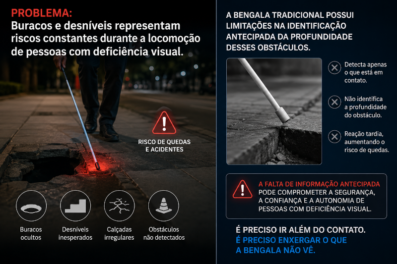
A mobilidade de pessoas com deficiência visual ainda enfrenta dificuldades
causadas pela falta de acessibilidade nas vias públicas. Buracos, desníveis
e irregularidades nas calçadas representam riscos constantes,
podendo provocar acidentes e comprometer a segurança durante a locomoção.
Embora a bengala tradicional seja um importante recurso de apoio, ela possui
limitações na detecção antecipada de obstáculos mais profundos. Diante disso,
surge a necessidade de desenvolver uma solução tecnológica acessível capaz de identificar
irregularidades no solo e fornecer alertas eficientes,
aumentando a autonomia e a segurança do usuário.
Objetivo Geral
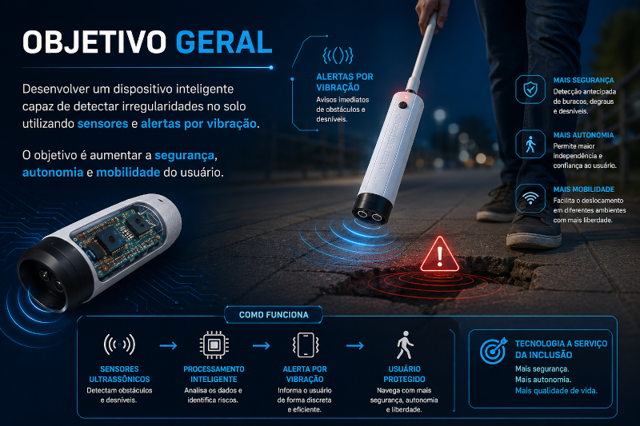
O objetivo geral deste projeto é desenvolver uma ponteira inteligente
para bengala capaz de detectar obstáculos e irregularidades no solo,
proporcionando maior segurança e autonomia para pessoas com deficiência visual.
O sistema utiliza alertas vibratórios
e sonoros para auxiliar o usuário durante a locomoção.
Além disso, o projeto busca criar uma solução acessível e funcional,
unindo tecnologia e inclusão social por meio da utilização
de sensores e sistemas embarcados aplicados à mobilidade assistiva..
Objetivos Específicos
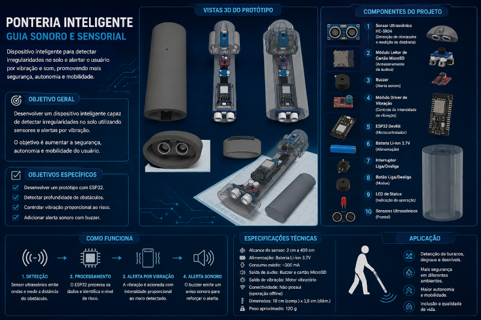
Entre os objetivos específicos, destaca-se a utilização do sensor ultrassônico
para detectar obstáculos e irregularidades no ambiente, enquanto o
Espressif Systems ESP32 realiza o processamento dos dados em tempo
real e a classificação dos níveis de risco encontrados.
O sistema também tem como finalidade acionar motores vibratórios e alertas
sonoros conforme o perigo detectado, além de demonstrar na
prática conceitos de sistemas embarcados, programação e integração
entre hardware e software em uma solução tecnológica assistiva.
Arquitetura do Sistema
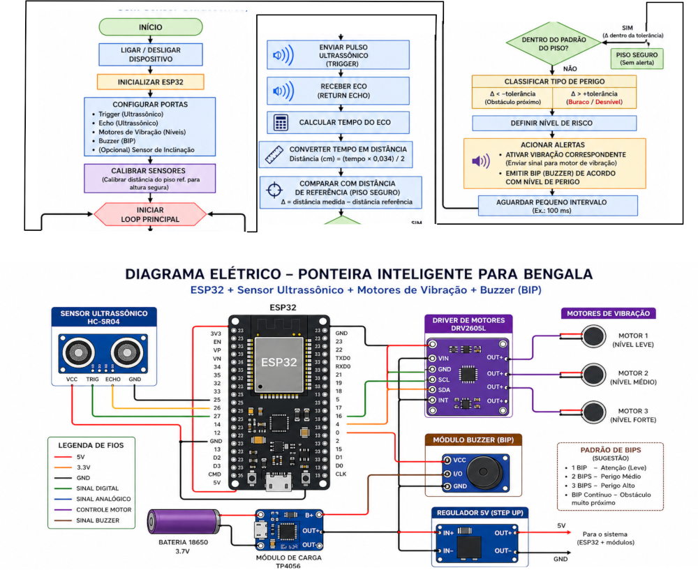
A arquitetura da ponteira inteligente foi desenvolvida com base na
estrutura computacional de entrada, processamento, memória e saída.
O sistema utiliza o sensor ultrassônico HC-SR04 para capturar
informações do ambiente, realizando a medição contínua da distância
entre a bengala e o solo. Esses dados são enviados para o Espressif
Systems ESP32, responsável pelo processamento das informações e pela
classificação dos níveis de risco detectados.
Entrada → Processamento → Saída
Após o processamento, o sistema aciona os dispositivos de saída,
como motores vibratórios e buzzer, emitindo alertas táteis e sonoros
conforme o nível de perigo identificado. Dessa forma, a ponteira inteligente
consegue fornecer respostas rápidas em tempo real, aumentando a segurança,
acessibilidade e autonomia de pessoas com deficiência visual durante a locomoção.
Entrada: Sensor HC-SR04
Processamento: ESP32
Saída: Vibração e buzzer
Classificação de Perigo
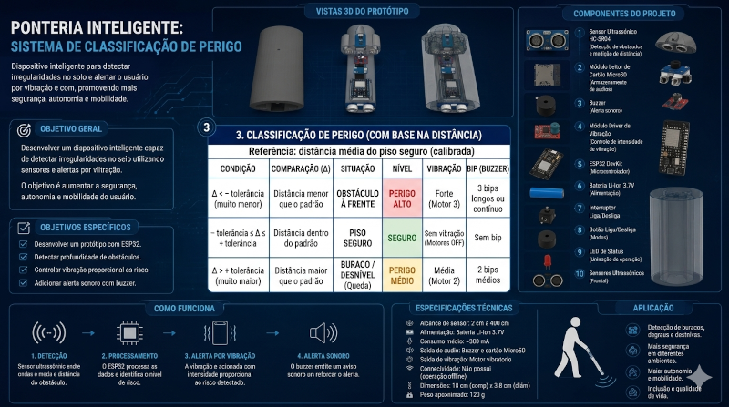
🟢 Seguro (0 – 15 cm)
Superfície considerada estável e sem riscos imediatos.
O sistema permanece sem emitir alertas.
🟡 Atenção (16 – 30 cm)
Pequenas irregularidades detectadas.
O usuário recebe vibração leve para manter atenção.
🟠 Perigo Médio (31 – 50 cm)
Presença de desníveis ou obstáculos moderados.
O sistema ativa vibração média e alertas sonoros.
🔴 Perigo Alto (Acima de 50 cm)
Alto risco de queda ou acidente.
O sistema emite vibração forte e múltiplos bipes de alerta.
A intensidade dos alertas aumenta conforme a profundidade e o nível de risco detectado.
Resultados Esperados
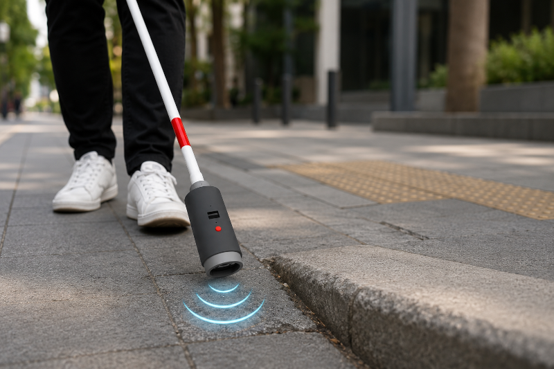
Espera-se que a ponteira inteligente proporcione
maior segurança e autonomia para pessoas com deficiência
visual durante a locomoção. Com a utilização do sensor ultrassônico
e do Espressif Systems ESP32, o sistema deverá identificar obstáculos,
buracos e irregularidades no solo em tempo real, emitindo alertas sonoros
e vibratórios de acordo com o nível de risco detectado.
Além disso, o projeto busca demonstrar a eficiência da integração
entre hardware e software em uma solução assistiva de baixo custo.
Espera-se também contribuir para a acessibilidade e inclusão social,
oferecendo um dispositivo funcional, acessível e capaz de auxiliar na
prevenção de acidentes durante o deslocamento do usuário.
Implementação Oculos
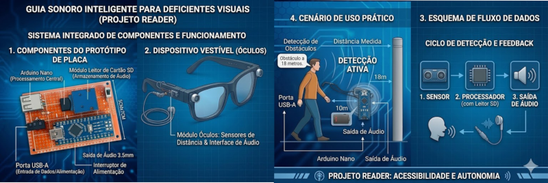
O Óculos Inteligente MK1 foi desenvolvido como um sistema complementar
à Ponteira Inteligente, com o objetivo de ampliar a percepção espacial do
usuário e aumentar a segurança durante a locomoção. O dispositivo utiliza
sensores ultrassônicos instalados na estrutura do óculos para detectar obstáculos
frontais e elevados que normalmente não seriam identificados pela bengala tradicional
. As informações capturadas são processadas por um Arduino Nano, responsável por interpretar
a distância dos objetos e acionar alertas sonoros em diferentes níveis de atenção, transmitidos
por uma saída de áudio integrada ou por fones de ouvido.
A estrutura do protótipo foi projetada de forma compacta,
portátil e modular, utilizando componentes como Arduino Nano,
leitor de cartão SD, entrada USB Tipo A, saída de som integrada
e conector P2 para áudio. O sistema funciona através da captura de
dados do ambiente, processamento das informações e emissão de alertas
sonoros conforme a proximidade dos obstáculos. Futuramente, o projeto prevê
a integração de câmeras inteligentes e Inteligência Artificial do DVKit,
permitindo reconhecimento avançado do ambiente urbano, identificação de
riscos em tempo real e navegação assistida para pessoas com deficiência visual.
Implenetação Futura KIt com Raspberry pi + IA
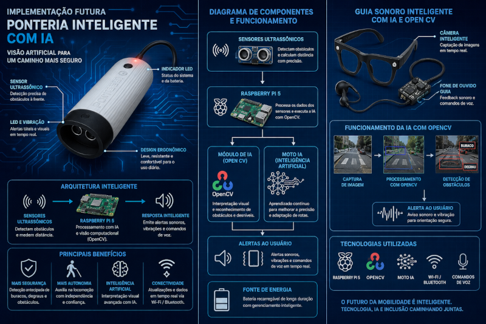
A principal evolução prevista para o projeto consiste na
substituição dos sensores ultrassônicos básicos por um sistema
de câmeras inteligentes integradas ao ecossistema do DVKit.
Neste novo modelo, as câmeras instaladas no óculos capturam imagens
do ambiente em tempo real e enviam para um Raspberry Pi. O sistema
utiliza Inteligência Artificial com OpenCV para identificar obstáculos,
buracos e degraus, emitindo alertas sonoros, comandos de voz e vibrações
para auxiliar a locomoção segura do usuário.
Conclusão
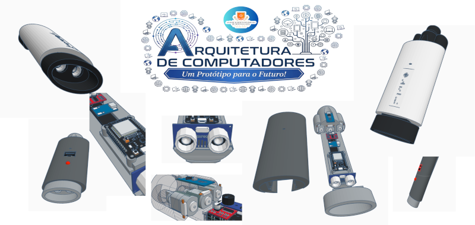
A Ponteira Inteligente para Bengala foi desenvolvida para auxiliar
pessoas com deficiência visual, utilizando sensores ultrassônicos,
ESP32, vibração e alertas sonoros para detectar obstáculos e irregularidades
no solo. O sistema processa as informações em tempo real e alerta o usuário
conforme o nível de risco, oferecendo mais segurança e autonomia durante a locomoção.
O sistema foi estruturado em etapas de entrada, processamento,
memória e saída, permitindo o monitoramento contínuo do ambiente e
respostas rápidas diante de possíveis perigos. Além da funcionalidade atual,
o projeto apresenta potencial de expansão futura com integração de GPS,
Inteligência Artificial, aplicativos móveis e reconhecimento inteligente de obstáculos.
Dessa forma, a ponteira inteligente representa não apenas um protótipo acadêmico,
mas também uma proposta tecnológica com impacto social relevante, contribuindo
para acessibilidade, inclusão e melhoria da qualidade de
ida de pessoas com deficiência visual.